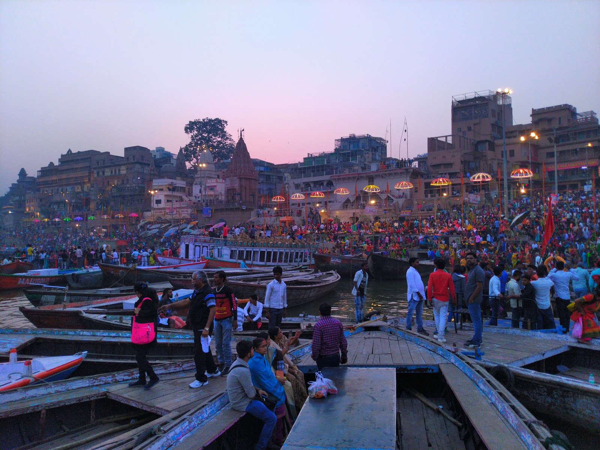
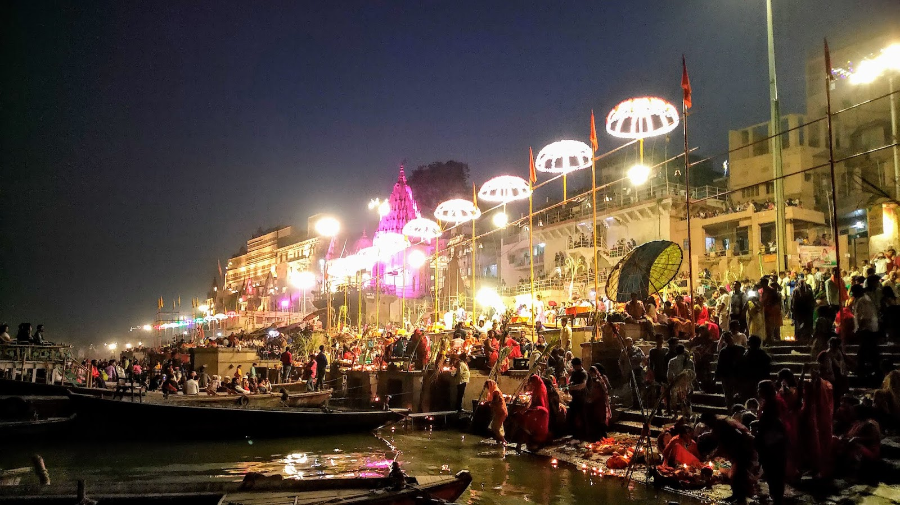

Varanasi or Kashi - City of Ghats
ADVENTURE IS WORTHWHILE. ~ ARISTOTLE
It was just two days after my birthday. I was in Lucknow for Diwali and had booked a ticket via Varanasi to Bangalore to travel back after vacations. Well that was the plan, and my train was supposed to be in Varanasi 5 hours before my flight. And I must tell, you can never predict what's gonna happen next.
The winters had already hit the North India and that means it will be sooner when the visibility gonna go down with dense fog. And that's exactly what happened on 13th November 2018. My train got delayed by 4 hours and I have to miss the flight because I had missed the boarding and did not do a web check in either. So after struggle, I got a next day flight and had to stay in Varanasi. Today was another big festival which was Chhath Pooja and I experienced it in a magical way.

View of Assi Ghat from Boats
So, I checked into a hotel and left to explore the amazing "Banaras ki galiyan", i.e. streets of Varanasi. In the morning I went for Assi Ghat and saw Aftaab Shivdasni shooting for his next movie. Had some tasty Bhelpuri on the Ghats and wander around. By evening I saw the amazing Ganga River aarti. After it was time a lot of women gathered along with their families and kids to continue the Chhath Pooja Ceremony.

Chhath Pooja at Ghats of Varanasi
I was filled with love, religion, I felt patriotic and so amazed to see the India that lives together and thrives together. I also went to few temples and experienced the magnificent structures around. With so many glittering Diyas and continuously ringing bells, it was an awestruck evening.
After an amazing day in Varanasi, I had dinner and came back to my hotel room lost in the experience of life around. Next day I left back for Bangalore and told stories about my day in Banaras.